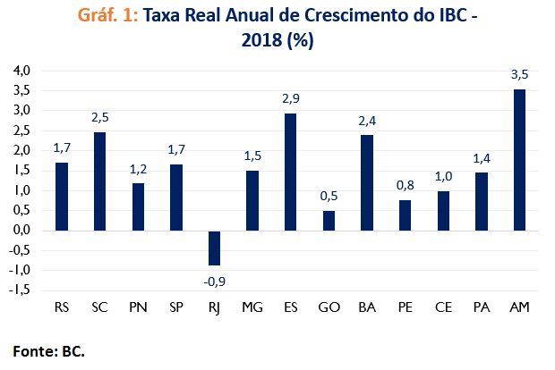

Economia O Rio de Janeiro tem uma das economias mais fortes do Brasil, com destaque para a indústria do petróleo, refino, estaleiros e o setor de serviços. A Região Metropolitana concentra a maior parte da atividade econômica, com um dos maiores PIBs per capita do país.

Governador atua O atual governador é Cláudio Castro (PL), no cargo desde 2021. Ele foi eleito em 2022 e é um dos governadores mais jovens da história recente do estado.
População O estado tem cerca de 17,2 milhões de habitantes, sendo o terceiro mais populoso do Brasil. Tem alta densidade demográfica e um crescimento populacional atualmente estável.
Principais cidades A capital, Rio de Janeiro, é a maior e mais conhecida cidade. Outras importantes são Niterói, São Gonçalo, Duque de Caxias, Nova Iguaçu e Petrópolis — cada uma com forte relevância econômica e populacional.
Elaborado por Gustavo Pereira